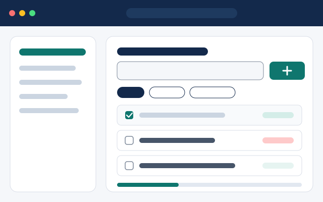
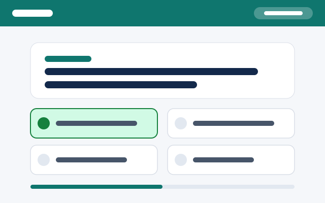

Academic Planner
An interactive planner for adding, completing, filtering and deleting tasks. Input is validated in JavaScript, and tasks are saved in the browser.
- JavaScript
- DOM
- localStorage
Sample projects with screenshots, descriptions and links. Use the filters to focus on one kind of work.
Each card links to a live page or a source repository. Projects marked as simulated are samples for this portfolio.
Showing 3 of 3 projects.

An interactive planner for adding, completing, filtering and deleting tasks. Input is validated in JavaScript, and tasks are saved in the browser.
A responsive, five-page site built with semantic HTML, one external stylesheet that uses Flexbox and Grid, and vanilla JavaScript.

A visual AI tutor for maths and science. Students ask by voice, photo or their own notes, and Litu draws the idea on a virtual chalkboard as it explains, then checks they understood. Includes WAEC, NECO and JAMB exam prep.